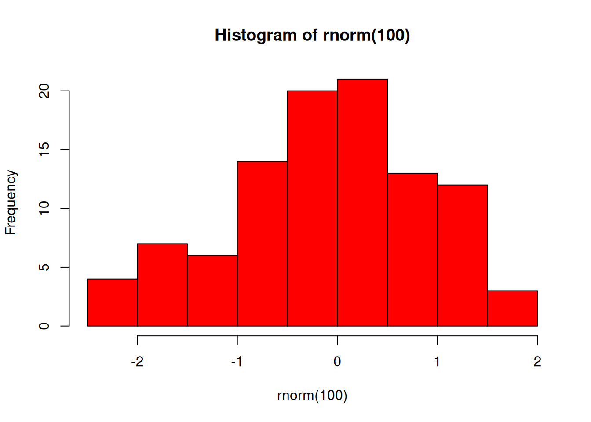

The arrival of the tidyverse has popularised a new way of programming in R, piping. Specifically it has popularised the magrittr pipe, %>%, so-called because it originated in a package called {magrittr}.
The pipe is essentially an alternative to nesting that allows functions to be chained together such that the output of one function becomes the first input of the next. It takes some getting used to but the end-result is a lot less brackets and much more readable code.
Over the past few years, the {magrittr} package pipe became so popular that a native pipe, |>, was introduced from R-4.1.0. In these training materials we still use the magrittr pipe for backwards compatibility but changes are anticipated during 2025. It is worth noting the the Tidyverse style guide now recommends the use of the native pipe instead of the {magrittr} pipe.
7.1 The Basics of Piping
To see how it works we will use some theophylline data. The aim here is to extract baseline concentration values for each subject. We will use filter and select. Without the pipe there are two ways we might do this: 1. nesting; 2. via intermediary datasets.
# tidyverse loads the dplyr package for filter and select (and the pipe)library(tidyverse) # Start with the theoph datahead(theoph)
# Method 2: intermediary datasets# (better, but leaves us with an object, bl_rows, that we may not want)bl_rows <-filter(theoph, TIME ==0)bl_conc <-select(bl_rows, SUBJID, CONC)# Now check it workedhead(bl_conc)
The magrittr pipe provides a more readable syntax, similar to method 2 but avoids the intermediary dataset. The theoph data are piped in as the first argument to the filter function and so we don’t need to specify it again, leaving only the row subset that we wish to apply. The filtered data are then piped into the select function in order to reduce-down the number of columns. As the data are piped in we again avoid having to provide the data as the first argument to select, leaving us to specify the columns that we wish to keep (or drop).
bl_conc <- theoph %>%# Take the theoph data, then ...filter(TIME ==0) %>%# ... filter the rows, then ... select(SUBJID, CONC) # ... select columns# Now check it workedbl_conc %>% head
The tidyverse has been designed with piping in mind. Each of the functions that we have seen thus far (and those that we are about to look at) takes a data frame as the first argument of the function, processes the data frame somehow, then outputs another data frame. For this reason we will continue to use the pipe for the remainder of this course (after some exercises).
7.3 More on Piping
Piping works best with functions for which the first input argument and the output are of the same type, for example data frames. However it is possible to pipe into any function argument using a dot/period, ..
# Pipe into a statementp_val <-0.049p_val %>%cat("The p-value is", .)
The p-value is 0.049
# Pipe colours into a plot"red"%>%hist(rnorm(100), col = .)

NOTE: When using R’s native pipe, we use an underscore, _, in place of the ..
7.4 EXERCISE
Use the pipe to create a new dataset called act_bl:
Extract the randomisation records from the act data
Calculate ACT total score and name this ACTBL. HINT: Use code from earlier exercise
Keep only the USUBJID and ACTBL columns
Write this to a CSV called “act_bl.csv”
If you notice an issue, have suggestions for improvements, or want to view the source code, you can find it on GitHub.